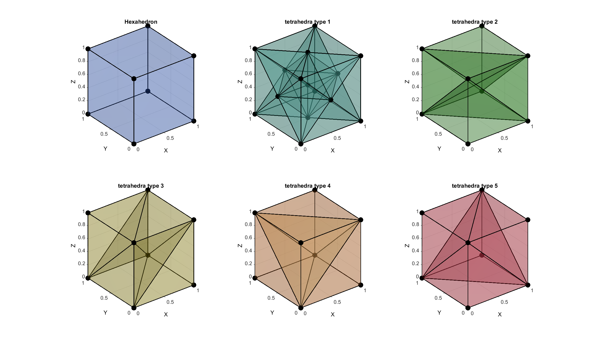

hex2tet
Below is a demonstration of the features of the hex2tet function
Contents
Syntax
[TET,Vtet,C]=hex2tet(HEX,V,C,tetOpt);
Description
clear; close all; clc;
Plot settings
fontSize=15; faceAlpha1=0.25; edgeWidth=2; markerSize=50;
Examples
Converting a hexahedral element to tetrahedral elements
Creating an example hexahedral element
V=[0 0 0; 1 0 0; 1 1 0; 0 1 0; 0 0 1; 1 0 1; 1 1 1; 0 1 1;]; %nodes E=[1:8]; %Element
%Converting the element to sets of tetrahedral elements. Different types %are available [E1,V1,C1]=hex2tet(E,V,[],1); [E2,V2,C2]=hex2tet(E,V,[],2); [E3,V3,C3]=hex2tet(E,V,[],3); [E4,V4,C4]=hex2tet(E,V,[],4); [E5,V5,C5]=hex2tet(E,V,[],5);
Visualization
[F]=element2patch(E); %Patch data for plotting [F1]=element2patch(E1); %Patch data for plotting [F2]=element2patch(E2); %Patch data for plotting [F3]=element2patch(E3); %Patch data for plotting [F4]=element2patch(E4); %Patch data for plotting [F5]=element2patch(E5); %Patch data for plotting pcolors=gjet(6); cFigure; subplot(2,3,1); title('Hexahedron','FontSize',fontSize); xlabel('X','FontSize',fontSize); ylabel('Y','FontSize',fontSize); zlabel('Z','FontSize',fontSize); hold on; patch('Faces',F,'Vertices',V,'FaceColor',pcolors(1,:),'FaceAlpha',faceAlpha1,'lineWidth',edgeWidth); plotV(V,'k.','MarkerSize',markerSize); view(3); grid on; axis equal; axis tight; set(gca,'FontSize',fontSize); camlight headlight; subplot(2,3,2); title('tetrahedra type 1','FontSize',fontSize); xlabel('X','FontSize',fontSize); ylabel('Y','FontSize',fontSize); zlabel('Z','FontSize',fontSize); hold on; patch('Faces',F1,'Vertices',V1,'FaceColor',pcolors(2,:),'FaceAlpha',faceAlpha1,'lineWidth',edgeWidth); plotV(V1,'k.','MarkerSize',markerSize); view(3); grid on; axis equal; axis tight; set(gca,'FontSize',fontSize); camlight headlight; subplot(2,3,3); title('tetrahedra type 2','FontSize',fontSize); xlabel('X','FontSize',fontSize); ylabel('Y','FontSize',fontSize); zlabel('Z','FontSize',fontSize); hold on; patch('Faces',F2,'Vertices',V2,'FaceColor',pcolors(3,:),'FaceAlpha',faceAlpha1,'lineWidth',edgeWidth); plotV(V2,'k.','MarkerSize',markerSize); view(3); grid on; axis equal; axis tight; set(gca,'FontSize',fontSize); camlight headlight; subplot(2,3,4); title('tetrahedra type 3','FontSize',fontSize); xlabel('X','FontSize',fontSize); ylabel('Y','FontSize',fontSize); zlabel('Z','FontSize',fontSize); hold on; patch('Faces',F3,'Vertices',V3,'FaceColor',pcolors(4,:),'FaceAlpha',faceAlpha1,'lineWidth',edgeWidth); plotV(V3,'k.','MarkerSize',markerSize); view(3); grid on; axis equal; axis tight; set(gca,'FontSize',fontSize); camlight headlight; subplot(2,3,5); title('tetrahedra type 4','FontSize',fontSize); xlabel('X','FontSize',fontSize); ylabel('Y','FontSize',fontSize); zlabel('Z','FontSize',fontSize); hold on; patch('Faces',F4,'Vertices',V4,'FaceColor',pcolors(5,:),'FaceAlpha',faceAlpha1,'lineWidth',edgeWidth); plotV(V4,'k.','MarkerSize',markerSize); view(3); grid on; axis equal; axis tight; set(gca,'FontSize',fontSize); camlight headlight; subplot(2,3,6); title('tetrahedra type 5','FontSize',fontSize); xlabel('X','FontSize',fontSize); ylabel('Y','FontSize',fontSize); zlabel('Z','FontSize',fontSize); hold on; patch('Faces',F5,'Vertices',V5,'FaceColor',pcolors(6,:),'FaceAlpha',faceAlpha1,'lineWidth',edgeWidth); plotV(V5,'k.','MarkerSize',markerSize); view(3); grid on; axis equal; axis tight; set(gca,'FontSize',fontSize); camlight headlight; drawnow;

GIBBON www.gibboncode.org
Kevin Mattheus Moerman, gibbon.toolbox@gmail.com